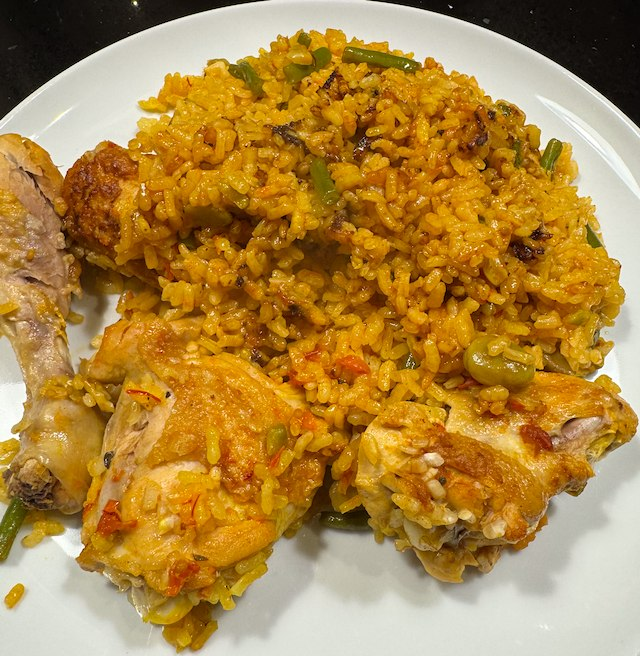

Paella Valenciana

From Tapas Revolution by Omar Allibhoy. His youtube video is very instructive. The aim is to get a 'socarrat' on the bottom of the paella - which is a crusty, burnt bit. To do this the rice is cooked on a high heat, and you don't stir at all once the rice is added.
Ingredients
- 1 chicken, cut into pieces, skin on, bone in
- salt
- olive oil
- 100g green beans, cut into thirds
- 50g broad beans, from a tin
- 2 artichoke hearts, from a jar
- 2 garlic cloves garlic, thinly sliced
- 2 tomatoes, chopped
- 1 tbsp smoked paprika
- 3 sprig rosemary
- 1.5 litre chicken stock + 1tsp salt
- saffron, good pinch
- 500g paella rice
Method
Stock. Heat 1.5 litre of water in a pan and add the stock cube plus 1 tsp table salt. Keeps the stock warm.
Chicken. Heat a paella dish or frying pan to hot. Add oil, chicken and salt and brown for 15 min.
Add green beans and broad beans to the pan, and cook for 3 min.
Turn down heat to low. Add garlic and cook for 1 min.
Add Smoked Paprika, and cook for 1 min.
Turn up the heat. Add tomatoes and artichoke, and cook for 2 min.
Add stock and saffron. Give a gentle stir and bring to the boil.
Add rice. Shake the pan to spread the rice out - don't stir. Cook on high heat for 10 min. Don't stir.
When the water is absorbed to the top of the rice. Lay over the rosemary. Turn down heat to low. Cover tightly with foil. Cook for 6 min.
Turn off heat, and leave for 5 min. Don't peek or break the foil. This lets the rice finish cooking in the steam.
Serve. Make sure to scrape the good bits off the bottom of the pan. Each person should get rice from edge, bottom and center of pan.